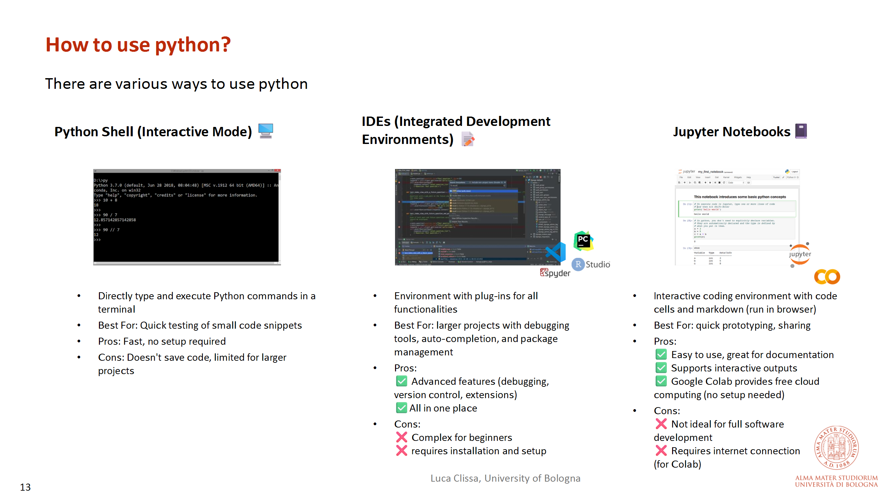
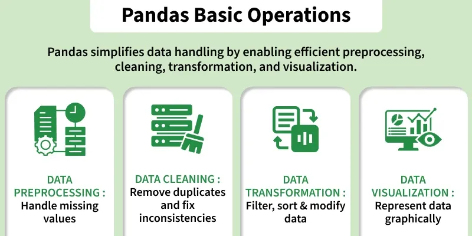
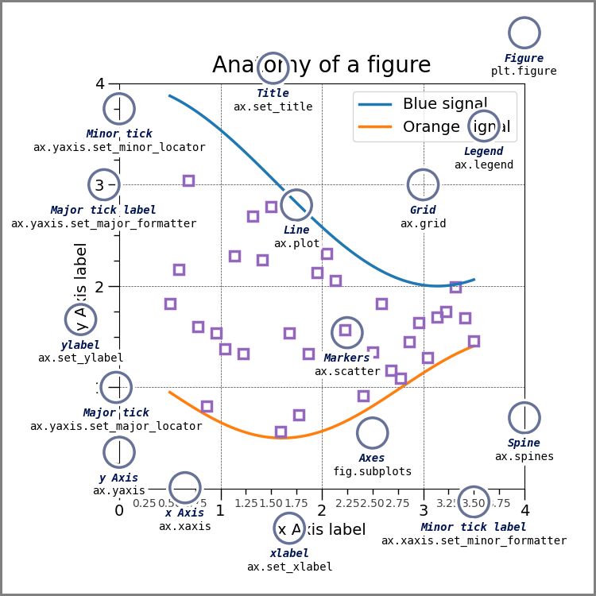

Big Picture
This lecture is different from the previous ones: it is a hands-on session, so the goal is not just to read concepts, but to actively try code and build familiarity with the tools.
The lecture covers a practical introduction to Python, the main built-in data structures, the basic workflow of Jupyter/Colab, and the first Pandas tools used in data science.
How to Use Python
The slides present three main ways to work with Python: the shell, an IDE, and Jupyter notebooks.
Python Shell
Useful for quick testing of small snippets.
IDE
Better for larger projects, debugging, and package management.
Best for interactive coding, quick prototyping, explanations, and sharing. This is the environment most aligned with the lecture workflow.

Jupyter and Google Colab
Jupyter notebooks combine code, text, equations, and outputs in one place, which makes them especially useful for data science and machine learning.
Why Jupyter is useful
- interactive code cells
- markdown explanations
- good for prototyping and sharing
Why Colab is useful
- browser-based
- no setup required
- easy collaboration
Python Basics
Python is interpreted, dynamically typed, and strongly shaped by indentation-based syntax.
| Feature | Main Idea |
|---|---|
| Indentation | Defines code blocks and control flow |
| Dynamic typing | Variables do not need explicit type declarations |
| Interpreted execution | Useful for interactive testing and notebooks |
| Readable syntax | Designed to be compact and close to pseudo-code |
Example
x = 10
name = "Alice"
is_student = True
print(type(x))
print(type(name))
print(type(is_student))What should this print?
It prints the types int, str, and bool.
Functions and Modules
Functions make code reusable, cleaner, and easier to debug.
def add(p, q, r):
temp = p + q + r
return temp
result = add(1, 10, 100)
print(result)The lecture also emphasizes that modules and packages help organize code into reusable components, and that third-party packages extend Python’s functionality substantially.
- avoid repetition
- improve readability
- make logic reusable
- extend functionality
- save implementation time
- support data and ML workflows
Data Structures
Choosing the right data structure matters for readability, performance, and the way data is manipulated in machine learning workflows.
| Structure | Ordered? | Mutable? | Duplicates? | Typical Use | Example |
|---|---|---|---|---|---|
| List | Yes | Yes | Yes | General-purpose ordered collection | [1, 2, 3] |
| Dictionary | Yes* | Yes | Keys: No Values: Yes |
Key-value data (structured records) | {"a": 1, "b": 2} |
| Set | No | Yes | No | Unique elements, fast membership checks | {1, 2, 3} |
| Tuple | Yes | No | Yes | Fixed, immutable collections | (1, 2, 3) |
| NumPy Array | Yes | Yes | Yes | Efficient numerical computation | np.array([1, 2, 3]) |
Mini examples
# list
my_list = [10, 20, 30]
print(my_list[1])
# dictionary
student = {"name": "Alice", "age": 25}
print(student["name"])
# set
unique_words = {"cat", "dog", "cat"}
print(unique_words)
# numpy
import numpy as np
arr = np.array([1, 2, 3, 4, 5])
print(arr * 2)Pandas Essentials
Pandas is one of the most important tools in applied machine learning because it turns raw tabular data into something easier to inspect, clean, transform, and analyze.
What Pandas gives you
A 1D labeled array. Useful for single columns, indexed values, and intermediate calculations.
A 2D labeled table with rows and columns. This is the main structure used for tabular datasets.
The slides explicitly frame Pandas around data wrangling, cleaning, transforming, indexing, aggregation, and merging, which is exactly why it is so central in data science workflows.
Creating data
import pandas as pd
series = pd.Series([10, 20, 30], index=["a", "b", "c"])
print(series)
df = pd.DataFrame({
"name": ["Alice", "Bob", "Charlie"],
"score": [91, 84, 88]
})
print(df)Loading data from files
import pandas as pd
df = pd.read_csv("data.csv")
print(df.head())| Task | Pandas Tool | Why It Matters |
|---|---|---|
| Load CSV data | pd.read_csv() |
Fast entry point for tabular datasets |
| Load Excel data | pd.read_excel() |
Useful for spreadsheets and lab/export files |
| Preview rows | .head() |
Quick inspection of structure and values |
Selection and indexing
The lecture highlights two core access patterns: .loc[] for label-based selection and .iloc[] for position-based selection.
# label-based
print(df.loc[0, "name"])
# position-based
print(df.iloc[0, 1])
# select a whole column
print(df["score"])Cleaning and preparation
Real-world data is messy: missing values, wrong types, duplicates, and inconsistent text are normal. Pandas is useful because it gives you direct tools for cleaning before modeling.
# drop missing rows
clean_df = df.dropna()
# fill missing values
filled_df = df.fillna(0)
# remove duplicates
dedup_df = df.drop_duplicates()Before cleaning
Missing values, duplicate rows, and inconsistent formats can break analysis or distort model training.
After cleaning
Data becomes more reliable, easier to summarize, and safer to pass into downstream ML code.
Aggregation and summary
One of Pandas’ most powerful features is summarizing large tables through grouping and aggregation.
grouped = df.groupby("name")["score"].mean()
print(grouped)Merging and joining
The slides also emphasize relational-style operations: combining information from multiple tables.
left = pd.DataFrame({"id": [1, 2], "name": ["Alice", "Bob"]})
right = pd.DataFrame({"id": [1, 2], "score": [91, 84]})
merged = pd.merge(left, right, on="id")
print(merged)
Matplotlib Essentials
Matplotlib is one of the foundational libraries for visualization in Python. It is used to create plots that help inspect data, understand patterns, and communicate results.
The notes summarize Matplotlib as the core plotting library, with a quick interface through
pyplot and a more structured object-oriented view based on Figure,
Axes, and visible plot elements.
Basic plotting with pyplot
import matplotlib.pyplot as plt
x = [1, 2, 3, 4]
y = [2, 4, 6, 8]
plt.plot(x, y)
plt.xlabel("x")
plt.ylabel("y")
plt.title("Simple Line Plot")
plt.show()Why plotting matters
- inspect distributions
- spot outliers
- understand relationships
- visualize predictions
- check trends
- communicate results clearly
Main concepts
| Concept | Meaning |
|---|---|
| Figure | The whole canvas or plotting area |
| Axes | The actual plot region inside the figure |
| Axis | The x or y scale |
| Artists | Visual elements such as lines, markers, and text |
Common plot types
import matplotlib.pyplot as plt
values = [5, 7, 3, 8]
plt.bar(["A", "B", "C", "D"], values)
plt.title("Bar Chart Example")
plt.show()import matplotlib.pyplot as plt
x = [1, 2, 3, 4, 5]
y = [5, 7, 6, 9, 10]
plt.scatter(x, y)
plt.title("Scatter Plot Example")
plt.show()For this lecture, the goal is not to master the entire plotting API, but to become comfortable reading and writing simple plots that are useful in exploratory data analysis.

Try It Yourself
Create a list with four numbers and print the last two elements using slicing.
Possible solution
numbers = [3, 7, 10, 15]
print(numbers[2:])Create a dictionary for a student with keys name and course, then print the course.
Possible solution
student = {"name": "Fateme", "course": "Bioinformatics"}
print(student["course"])Load a small DataFrame in Pandas and select one column.
Possible solution
import pandas as pd
df = pd.DataFrame({
"city": ["Bologna", "Rome", "Milan"],
"temp": [22, 25, 21]
})
print(df["city"])Create a simple line plot using Matplotlib with x = [1,2,3,4] and y = [2,4,6,8]. Add labels and a title.
Possible solution
import matplotlib.pyplot as plt
x = [1, 2, 3, 4]
y = [2, 4, 6, 8]
plt.plot(x, y)
plt.xlabel("x")
plt.ylabel("y")
plt.title("Line Plot")
plt.show()Create a scatter plot with: x = [1,2,3,4,5] and y = [5,7,6,9,10]. What pattern do you observe?
Possible solution
import matplotlib.pyplot as plt
x = [1, 2, 3, 4, 5]
y = [5, 7, 6, 9, 10]
plt.scatter(x, y)
plt.title("Scatter Plot")
plt.show()The points show an increasing trend, which suggests a positive relationship between x and y.
Study Material
Full overview of Python basics, data structures, Pandas, and the hands-on workflow.
View PDF →Useful for the lecturer’s practical advice, coding workflow, and comments around tools and setup.
View PDF →Repository with course code and notebook material used in the lecture.
Open Repository →Because this is a hands-on lecture, the best study strategy is to keep the notebook material and the lecture page open together.
Quick Review Quiz
1. Why does indentation matter in Python?
Because it defines code blocks and control structures.
2. What is dynamic typing?
Variables do not need explicit type declarations and can be rebound to different types.
3. What is the difference between a list and a set?
A list is ordered and allows duplicates; a set is unordered and keeps only unique elements.
4. Why is NumPy often preferred for numerical work?
Because it is faster and supports efficient vectorized operations.
5. What are the two main Pandas structures introduced here?
Series and DataFrame.
6. What is the purpose of .loc[] and .iloc[]?
.loc[] is label-based selection, while .iloc[] is position-based selection.
7. Why are Jupyter notebooks useful for ML work?
Because they combine code, outputs, and explanations in one interactive document.
8. What is one good use case for dictionaries?
Storing structured key-value information, such as settings or hyperparameters.